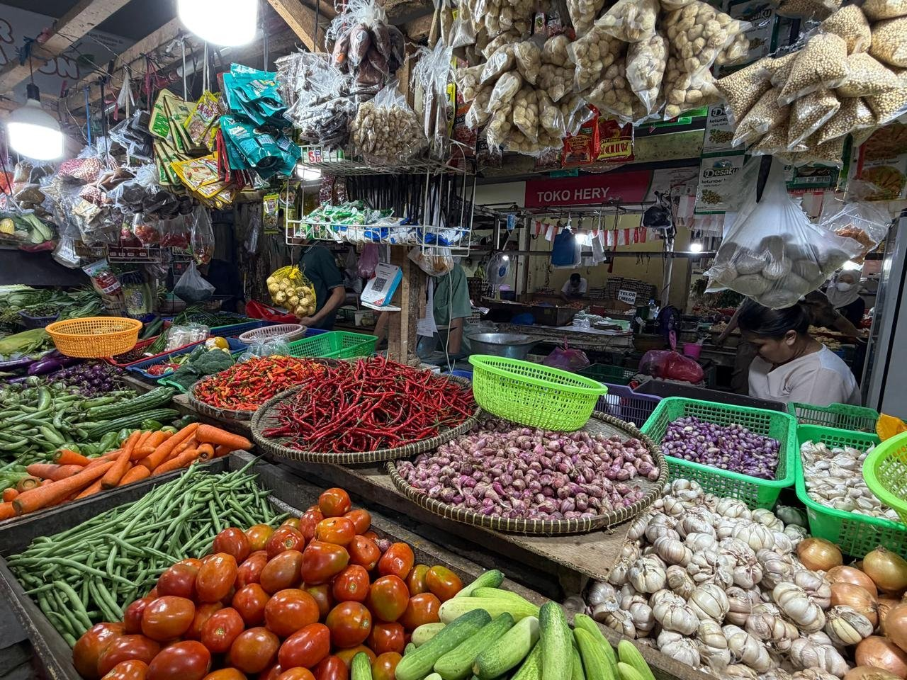

Home · Experiences · N°03
Yunic Dining brings a chef-led dinner to your home, villa or yacht: European technique, a lived understanding of Indonesian flavour, and menus written around the people at the table.
Two ways to dine with us, each written after we talk: what you love, what you are curious about, and what the market offers that week.
Our signature chef-led set menu. Served course by course, built around the season and the ingredients worth cooking right now.
A sharing table rooted in Yuli’s Indonesian heritage and our years across the archipelago. Regional dishes, sambals and the stories behind them, passed hand to hand.
Caviar, uni, A5 Wagyu and other exceptional products can be added to any menu on request, subject to availability.

Yunic Seasonal
A few times a year, we build a short-lived dinner around one ingredient at its moment: white asparagus, white or black truffle, an exceptional fish. Each edition runs only for as long as the ingredient is worth celebrating.
There is no fixed calendar. The next edition is announced first to the guests who ask for it.
The Caviar Dinner
A private dinner devoted to one of the world’s most exceptional ingredients. Available year-round by advance reservation, with caviar as the thread through every course.
From relaxed canapé gatherings to fully bespoke parties with premium ingredients, live finishing and tailored service.
Each one is shaped around your occasion, your guest count and your budget. Tell us what you have in mind, and we will tell you honestly what we can make of it.
Available on request · Menu and format created around your brief and budget.